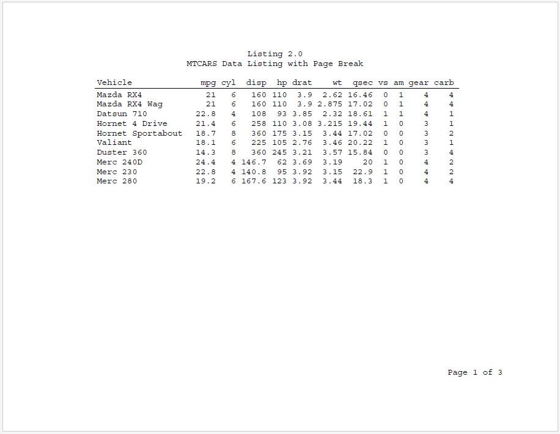
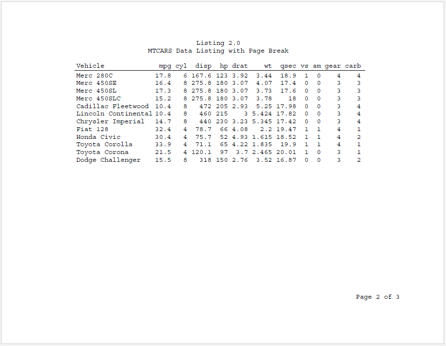
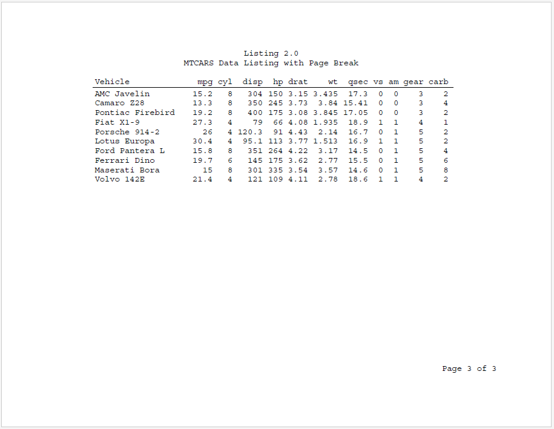

Page breaking will occur automatically if the table length exceeds
the available page length. But page wrapping can also be controlled
using the page_break parameter on the define()
function. The page_break parameter identifies a column on
which to break the page. The page will break every time the page break
variable changes. You can use an existing variable or create a special
variable just for the purpose of controlling the page breaks. If you
create a special variable just for breaking the page, it is often
desirable to make that column invisible. Here is an example:
library(reporter)
# Create temp file name
tmp <- file.path(tempdir(), "example6.pdf")
# Prepare data
dat <- mtcars
dat <- data.frame(vehicle = rownames(dat), dat,
page = c(rep(1, 10), rep(2, 12), rep(3, 10)))
rownames(dat) <- NULL
# View
dat
# vehicle mpg cyl disp hp drat wt qsec vs am gear carb page
# 1 Mazda RX4 21.0 6 160.0 110 3.90 2.620 16.46 0 1 4 4 1
# 2 Mazda RX4 Wag 21.0 6 160.0 110 3.90 2.875 17.02 0 1 4 4 1
# 3 Datsun 710 22.8 4 108.0 93 3.85 2.320 18.61 1 1 4 1 1
# 4 Hornet 4 Drive 21.4 6 258.0 110 3.08 3.215 19.44 1 0 3 1 1
# 5 Hornet Sportabout 18.7 8 360.0 175 3.15 3.440 17.02 0 0 3 2 1
# 6 Valiant 18.1 6 225.0 105 2.76 3.460 20.22 1 0 3 1 1
# 7 Duster 360 14.3 8 360.0 245 3.21 3.570 15.84 0 0 3 4 1
# 8 Merc 240D 24.4 4 146.7 62 3.69 3.190 20.00 1 0 4 2 1
# 9 Merc 230 22.8 4 140.8 95 3.92 3.150 22.90 1 0 4 2 1
# 10 Merc 280 19.2 6 167.6 123 3.92 3.440 18.30 1 0 4 4 1
# 11 Merc 280C 17.8 6 167.6 123 3.92 3.440 18.90 1 0 4 4 2
# 12 Merc 450SE 16.4 8 275.8 180 3.07 4.070 17.40 0 0 3 3 2
# 13 Merc 450SL 17.3 8 275.8 180 3.07 3.730 17.60 0 0 3 3 2
# 14 Merc 450SLC 15.2 8 275.8 180 3.07 3.780 18.00 0 0 3 3 2
# 15 Cadillac Fleetwood 10.4 8 472.0 205 2.93 5.250 17.98 0 0 3 4 2
# 16 Lincoln Continental 10.4 8 460.0 215 3.00 5.424 17.82 0 0 3 4 2
# 17 Chrysler Imperial 14.7 8 440.0 230 3.23 5.345 17.42 0 0 3 4 2
# 18 Fiat 128 32.4 4 78.7 66 4.08 2.200 19.47 1 1 4 1 2
# 19 Honda Civic 30.4 4 75.7 52 4.93 1.615 18.52 1 1 4 2 2
# 20 Toyota Corolla 33.9 4 71.1 65 4.22 1.835 19.90 1 1 4 1 2
# 21 Toyota Corona 21.5 4 120.1 97 3.70 2.465 20.01 1 0 3 1 2
# 22 Dodge Challenger 15.5 8 318.0 150 2.76 3.520 16.87 0 0 3 2 2
# 23 AMC Javelin 15.2 8 304.0 150 3.15 3.435 17.30 0 0 3 2 3
# 24 Camaro Z28 13.3 8 350.0 245 3.73 3.840 15.41 0 0 3 4 3
# 25 Pontiac Firebird 19.2 8 400.0 175 3.08 3.845 17.05 0 0 3 2 3
# 26 Fiat X1-9 27.3 4 79.0 66 4.08 1.935 18.90 1 1 4 1 3
# 27 Porsche 914-2 26.0 4 120.3 91 4.43 2.140 16.70 0 1 5 2 3
# 28 Lotus Europa 30.4 4 95.1 113 3.77 1.513 16.90 1 1 5 2 3
# 29 Ford Pantera L 15.8 8 351.0 264 4.22 3.170 14.50 0 1 5 4 3
# 30 Ferrari Dino 19.7 6 145.0 175 3.62 2.770 15.50 0 1 5 6 3
# 31 Maserati Bora 15.0 8 301.0 335 3.54 3.570 14.60 0 1 5 8 3
# 32 Volvo 142E 21.4 4 121.0 109 4.11 2.780 18.60 1 1 4 2 3
# Define table
tbl <- create_table(dat) %>%
define(vehicle, label = "Vehicle", width = 2, align = "left") |>
define(page, page_break = TRUE, visible = FALSE)
# Create the report
rpt <- create_report(tmp, output_type = "PDF",
font = "Courier", font_size = 12) |>
titles("Listing 2.0", "MTCARS Data Listing with Page Break") |>
set_margins(top = 1, bottom = 1) |>
add_content(tbl) |>
page_footer(right = "Page [pg] of [tpg]")
# Write the report
write_report(rpt)
# file.show(tmp)
Next: More Examples